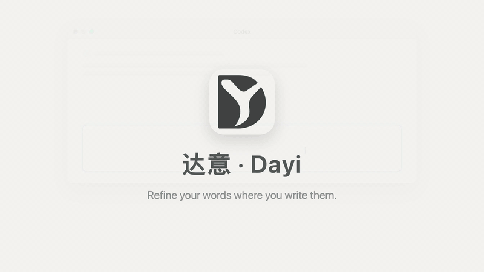

Select a rough draft in Codex, Claude, or any macOS text input, press ⌃⌥P, and it's rewritten in place by a model you choose. ⌃⌥Z undoes only that replacement. Dayi never sends your draft for you.

In any native, web, or Electron text field. With nothing selected, Dayi takes the whole input.
The text goes to the endpoint you configured with the prompt you can read and edit in Settings. A floating capsule shows the elapsed time.
Dayi reads the field back to confirm the write. If the text changed under it, it refuses rather than overwrites. ⌃⌥Z restores the original.
Any Chat Completions-compatible endpoint: OpenAI, Anthropic, DeepSeek, Ollama, your company's gateway. Keys stay in your Keychain.
History is a local SQLite file with a retention policy you control. There is nothing to sign up for and nothing to shut down.
The default prompt tightens a rough instruction for a coding assistant without answering it. Edit it, or keep several.
Every replacement is verified by reading the field back, and undo targets exactly that edit, not your later typing.
Synthetic drafts in a generic assistant window, not recordings of real sessions. 中文版
| Data | Where it goes | When |
|---|---|---|
| The selected text, plus the bundled or your custom prompt | The model endpoint you configured, over HTTPS | Only when you press ⌃⌥P |
| Your API key | macOS Keychain; sent only as the Authorization header to that endpoint | Same request |
| A website hostname | Nowhere; stored locally for history filters | On capture from a browser |
| A missing site icon request | The site's public HTTPS origin, without cookies or the page URL | Once per host, cached |
| Anything else | Nowhere. No telemetry. Update checks, when enabled, fetch a static file from this site | — |
Accessibility permission lets Dayi read the focused field and write the result back. It does not read other windows or run when you aren't pressing the shortcut. Every line above is checkable in the source.
Unlimited model profiles with a switch shortcut, unlimited custom prompts and per-site skill sets, unlimited history with search and export. The core stays free and MIT.
One email when Pro launches. Nothing else.